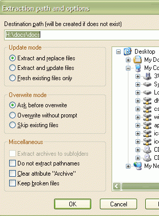
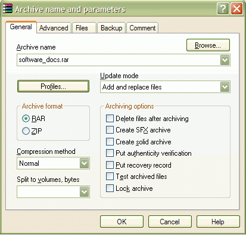

O que é um servidor web?
É um software que entrega páginas da web para os usuários via protocolo HTTP ou HTTPS.
Principais Servidores:
- Apache: Muito utilizado por sua flexibilidade e suporte.
- Nginx: Conhecido por sua alta performance e escalabilidade.
Backup de um Projeto
Como fazer:
- Compactar os arquivos:
tar -czvf backup.tar.gz pasta-do-projeto/
Como restaurar:
- Descompactar os arquivos:
tar -xzvf backup.tar.gz
Fonte: Hostinger
 